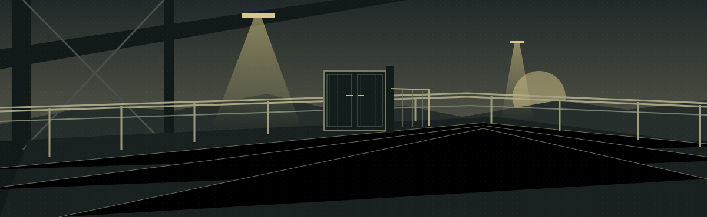

Place the listener
Atmosphere gives the scene a room, distance and a world beyond the frame. Name the environment and its relationship to dialogue.
Independent sound postproduction
For small films, sound begins with careful scene notes. Name three moments for the first conversation.
Prepare your scene01:15 / scene span

A fictional illustration and score. The cue sheet contains the full titles and notes. No audio recording or playback is provided.
Listen to the cut
Good scene notes describe the moment before they describe the effect. Where are we? What changes? Which line needs to land on its own?
Atmosphere gives the scene a room, distance and a world beyond the frame. Name the environment and its relationship to dialogue.
Footsteps, fabric and a latch can tell us how a person moves. Describe the gesture and the exact point it changes.
A musical idea has an exit as well as an entrance. Mark the end clearly when silence or a final line matters more.
Before the first conversation
Write three cues, check their timing, and keep a complete plain-text sheet for your edit. The tool works entirely in your browser.
Make a cue sheet Read the field guide